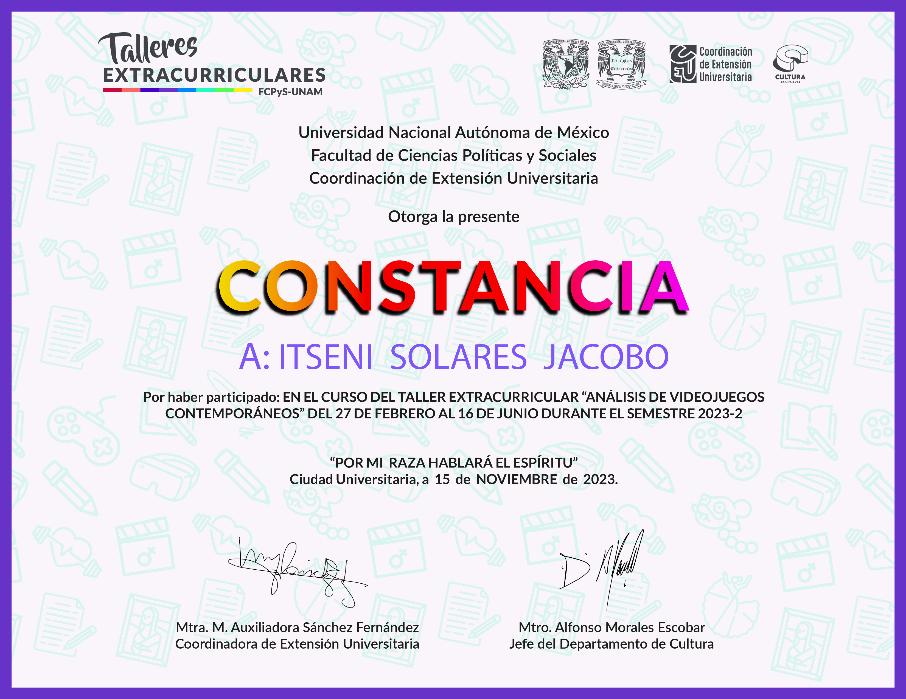
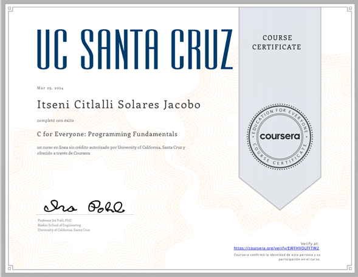
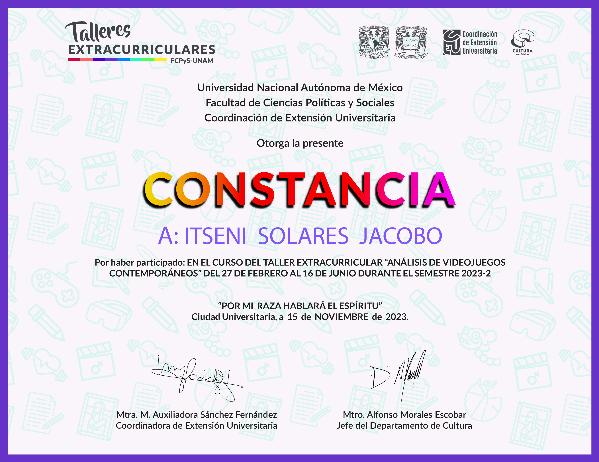
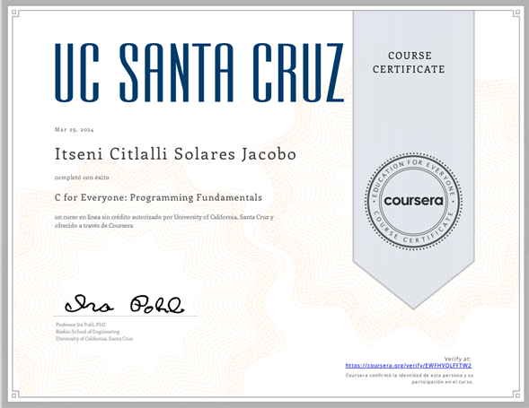

Amante de los videojuegos, el anime, la lectura y los viajes. Apasionada en demostrar su entusiasmo y dedicación al demostrar el potencial de los videojuegos en la educación. Pedagoga, estudiante de la Facultad de Filosofía y Letras de la UNAM. En los últimos años se posiciono como vicepresidenta en la Sociedad de Desarrollo en Videojuegos (SODVI) en la Facultad de Ingeniería de la UNAM. Su formación se compone por: talleres de análisis de videojuegos tanto contemporáneos como clásicos, diseño de videojuegos, historia del videojuego y juegos de rol como herramienta pedagógica, aunado a su formación académica en su Facultad de origen..
 



¡Estos son algunos de mis certificados, si estas interesado(a) visita mi linkedin, donde subo mis logros académicos!
“La madurez del hombre es haberse reencontrado, de grande con la seriedad que de niño tenía al jugar”
-Friedrich Nietzsche
Psst, por cierto, yo hice mi página web 💕